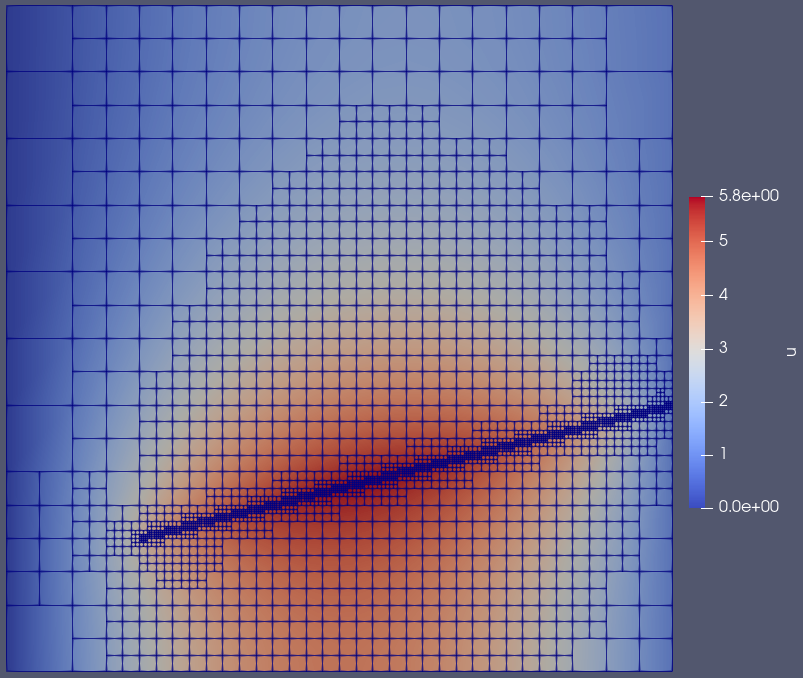

Using Line Sources
The Ray Tracing Module makes possible the contribution to residuals and Jacobians along segments of a line within the finite element mesh. The most simple use case of this capability is a source along a ray with given start and end points within the mesh.
Example
We begin with the standard "simple diffusion" problem:
[Mesh]
[gmg]
type = GeneratedMeshGenerator
dim = 2
nx = 10
ny = 10
xmax = 5
ymax = 5
[]
[]
[Variables/u]
[]
[Kernels/diff]
type = Diffusion
variable = u
[]
[BCs]
[left]
type = DirichletBC
variable = u
boundary = left
value = 0
[]
[right]
type = DirichletBC
variable = u
boundary = right
value = 1
[]
[]
[Executioner]
type = Steady
solve_type = 'PJFNK'
petsc_options_iname = '-pc_type -pc_hypre_type'
petsc_options_value = 'hypre boomeramg'
[]
[Outputs]
exodus = true
[]
Within this problem, we wish to define a constant line source with constant between the two points
The strong form of this system is
where
Defining the Study
A RepeatableRayStudy is defined that generates and executes the rays that compute the line source:
[UserObjects/study]
type = RepeatableRayStudy
names = 'line_source_ray'
start_points = '1 1 0'
end_points = '5 2 0'
execute_on = PRE_KERNELS # must be set for line sources!
[]
The study object defines a single Ray named line_source_ray that starts at (1, 1) and ends at (5, 2) to be executed on PRE_KERNELS.
You must set execute_on = PRE_KERNELS for any studies that have RayKernels that contribute to residuals and Jacobians.
Defining the RayKernel
RayKernels are objects that are executed on the segments of the rays. In this case, we wish to add a line source so we will define a LineSourceRayKernel:
[RayKernels/line_source]
type = LineSourceRayKernel
variable = u
value = 5
[]
# This isn't used in the test but can be enabled
# for pretty pictures as is used in an example!
The line_source LineSourceRayKernel contributes to the variable u for Ray line_source_ray with a value of 5.
Result
The visualized result follows in Figure 1.

Figure 1: Simple diffusion line source example result.

Figure 2: The result pictured in Figure 1 with a mesh overlay.
Just for the purposes of producing a more appealing picture, let's add some adaptivity to the mix to refine the region around the ray.
Take note of the [Adaptivity] block in the input file:
[Adaptivity]
steps = 0 # 5
marker = marker
initial_marker = marker
max_h_level = 5
[Indicators/indicator]
type = GradientJumpIndicator
variable = u
[]
[Markers/marker]
type = ErrorFractionMarker
indicator = indicator
coarsen = 0.1
refine = 0.5
[]
[]
Setting the number of adaptivity steps to 5 via a command line argument, i.e.:
./ray_tracing-opt -i test/tests/raykernels/line_source_ray_kernel/simple_diffusion_line_source.i Adaptivity/steps=5
leads to the well-refined and visually satisfying result below in Figure 3.

Figure 3: Simple diffusion line source example result with adaptivity.

Figure 4: The result pictured in Figure 3 with a mesh overlay.